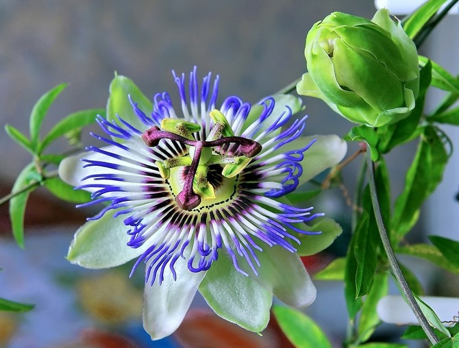
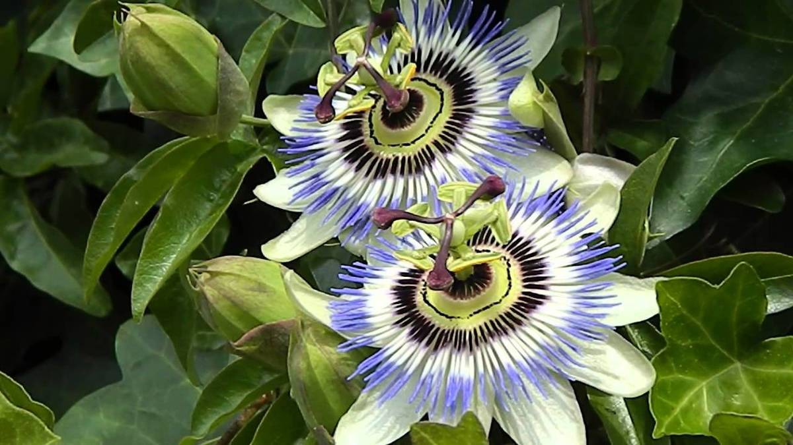
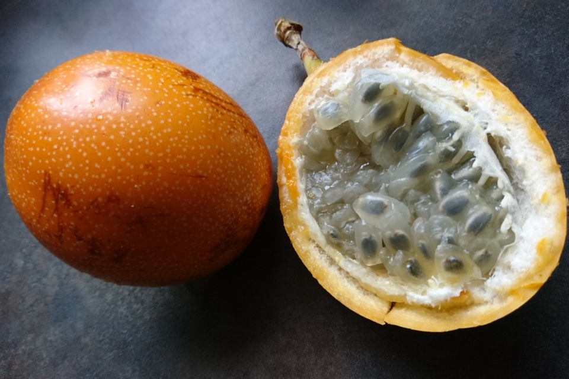

Пассифлора голубая (Passiflora caerulea)
Пассифлора голубая имеет множество названий. В народе ее называют Страстоцветом или Кавалерийской звездой. Ее родиной считаются Бразилия, Уругвай, Аргентина, Мадагаскар. Растение представляется собой лиану, достигающую в длину 9 метров. По мере роста стебель лианы деревенеет. Пассифлора может самостоятельно прикрепляться и разрастаться на вертикальных поверхностях. Ей в этом помогают длинные усики. Цветки довольно крупные (примерно с ладонь), яркие и издалека напоминают звезду. Лепестки располагаются слоями. Сначала более крупные и острые лепестки, а затем в центре более мелкие и тонкие. Пестик и тычинки крупные, сильно выступающие вперед. Пестик темный, бордовый, а тычинки ярко-желтые. Необычные цветы пассифлоры опадают уже через сутки после того, как распустятся, а затем появляются все новые и новые бутоны. Особенностью растения являются не только необычные цветы, но и форма листьев. Пассифлора имеет крупные листья, диаметром до 15 см, рассеченные на отдельные «пальчики». Каждый лист имеет по 5-7 таких пальцев. После цветения на лиане образуются плоды – оранжевые яйцевидные ягоды, до шести сантиметров в длину. Внутри ягоды содержатся красные зерна, очень похожие на зерна граната.
Уход
Освещение
Пассифлоре требуется яркое освещение, растение не боится даже прямых (но не слишком палящих) лучей. Его рекомендуется держать на любых окнах, кроме северных. На южной стороне летом лиану лишь слегка притеняют. В тени страстоцвет расти не сможет, и даже полутень способна сказаться на обильности его цветения. Но за зиму куст постепенно привыкает к уменьшающемуся световому дню, поэтому весной его листву следует беречь от яркого солнца, пока растение вновь к нему не адаптируется. Для горшка с цветком подбирают место, которое будет удобно проветривать — пассифлора предпочитает свежий воздух, но не любит холодных сквозняков. На лето растение можно переносить на улицу или на балкон.
Температура
Летом пассифлору держат в тепле — около 25 градусов. Зимой предпочтительны прохладные условия — около 15 градусов. Резких перепадов следует избегать, иначе листья начнут желтеть и сохнуть, а количество бутонов резко сократится. Холодостойкие виды можно выращивать на улице, начиная с 3-летнего возраста. До этого их переносят в сад в контейнерах, забирая в дом с приходом холодов.
Полив
Тропический цветок пассифлора предпочитает влажную почву, поэтому поливать следует обильно, до нескольких раз в неделю по мере просыхания грунта. Зимой, если цветок находится в прохладе, число поливов постепенно снижают до раза в 7-10 дней.
Уровень влажности
Пассифлора нуждается в периодическом опрыскивании. Его проводят в периоды особо сильной жары и сухости воздуха, а также зимой, если кустик находится неподалёку от батарей. Для этого используют мягкую отстоянную воду комнатной температуры. Но вода не должна попадать на цветки. Опрыскивания проводятся вечером, чтобы на листья не падали солнечные лучи.
Почва
Пассифлора не слишком требовательна к составу грунта и хорошо растёт практически в любой земле. Хорошо подойдёт смесь торфа с песком, дёрном и листовой почвой. Можно использовать готовые субстраты — для бегоний или цитрусовых. На дно ёмкости закладывают дренажный слой, а в субстрат вносят древесный уголь. Кроме того, кустам потребуется опора: лазящие стебли должны за что-то цепляться.
Подкормка
Удобрять пассифлору следует на протяжении всего периода роста — с марта до сентября. Подкормки проводят раз в 10-15 дней, используя органические или минеральные составы.. Чтобы не обжечь корни, подкормки проводят после поливов. Зимой подкормки не проводятся. Обрезка Обрезке подвергают кустики пассифлоры, которым уже исполнился год — цветки развиваются только на свежих побегах, поэтому это помогает стимулировать цветение. В дальнейшем такая процедура проводится не более раза в год. Лучшим временем для неё считается весна, когда растение возобновляет рост после зимнего отдыха. Удалению подлежат сухие или больные веточки, отцветшие стебли (их укорачивают на треть), а также побеги, загущающие куст. После обрезки куст должен пару недель провести в полутени. Для цветения побеги пассифлоры должны быть направлены вверх, поэтому их закрепляют на надёжных опорах и легонько подвязывают мягкими верёвочками, не перетягивая стебли.
Цветение
Цветки пассифлоры часто бывают очень ароматны. Часть видов зацветает ночью, у других цветки распускаются утром, дружно раскрываясь примерно в одно и то же время. В пасмурные дни цветки иногда могут оставаться закрытыми. Цветение продолжается с июля до середины осени. После него часть видов приносит съедобные кисло-сладкие плоды — пассифлору (похожа на маракуйю). В отличие от многих экзотических растений, большинство видов пассифлоры способны успешно плодоносить даже в домашних условиях, хотя иногда для этого требуются несколько экземпляров таких растений.
Другие популярные сорта
- Пассифлора кистецветная
- (Passiflora racemosa)
- Пассифлора гранадилла
- (Passiflora quadrangularis)
- Пассифлора съедобная
- (Passiflora edulis)